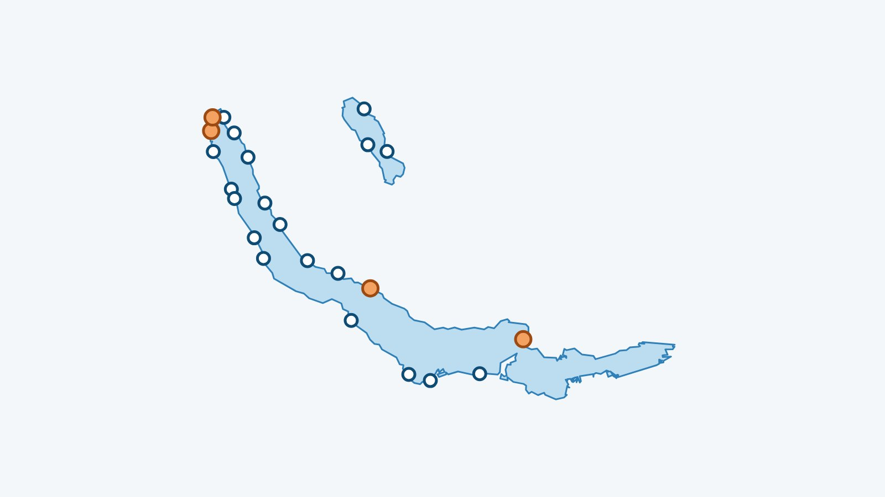

Kurz gesagt
Fürs Winterbaden im Zürichsee nennt die Schweizerische Lebensrettungs-Gesellschaft eine einfache Regel: nicht mehr Minuten im Wasser, als es Grad hat. Mein See zeigt das Wasser von heute vor jedem Badeplatz am See und am nahen Greifensee und verzeichnet 4 Saunas am Zürichsee.
Wie lange im Wasser bleiben?
Die Schweizerische Lebensrettungs-Gesellschaft nennt für kaltes Wasser eine einfache Regel: nicht mehr Minuten im Wasser bleiben, als das Wasser Grad hat. Das Wasser von heute steht weiter unten. Vorher lesen: die ersten 90 Sekunden im kalten Wasser und wie man sich danach aufwärmt.
Wo baden?
Das sind die von Mein See erfassten Badeplätze am Zürichsee und Greifensee, jeder mit eigener Seite (Wasser, Wind, Einschätzung). Prüfe vor dem Aufbruch, ob der Zugang offen ist: Viele Seebäder sind betreute Anlagen mit anderen Öffnungszeiten im Winter, und diese Angabe haben wir nicht für jeden Badeplatz.
Zürichsee
- Zurich – Strandbad Mythenquai
- Zurich – Seebad Enge
- Zurich – Strandbad Wollishofen
- Zurich – Seebad Utoquai
- Zurich – Strandbad Tiefenbrunnen
- Kilchberg
- Rüschlikon
- Thalwil
- Zollikon
- Küsnacht
- Erlenbach
- Oberrieden
- Feldmeilen
- Meilen
- Wädenswil – Rietliau
- Uetikon am See
- Richterswil
- Bäch
- Pfäffikon SZ
- Rapperswil
Greifensee
Aufwärmen: die Saunas am Wasser
Zürichsee
- Saunabooten Hildi & Alice (Bootsvermietung Enge), Zurich, bei Zurich – Strandbad Mythenquai: Zwei Saunaboote am Mythenquai, vermietet in festen 4-Stunden-Slots für 2 bis 6 Personen, ohne Schiffsführerausweis (max. 10 km/h), Online-Reservation. Preise je nach Quelle unterschiedlich: siehe Website.
- Saunaboot Leopoldd, Jona (Rapperswil-Jona), bei Rapperswil: Saunaboot ab der Marina KIBAG in Jona, bis zu sechs Personen, Slots von 3, 4, 6 oder 9 Stunden ab CHF 399, führerscheinfrei, ab 18 Jahren.
- Sauna am See Tonttu, Seebad Enge, Zurich (von September bis Mai), bei Zurich – Seebad Enge: Im historischen Seebad Enge: zwei gemischte Saunen und eine Frauenkabine, grosser Aussenbereich mit direktem Seezugang, Café, ohne Reservation. Saison laut badi-info.ch von Mitte September bis Anfang Mai.
- Seesauna Stäfa, Stäfa (von Oktober bis April), bei Uetikon am See: Seestrasse 2: finnische Sauna, Bio-Sauna am Dienstag, Indoor-Sauna-Cube, direkter Seezugang und beheizter Ruheraum; Eintritt CHF 30, ohne Reservation, laut Drittquellen von Mitte Oktober bis April.
Einträge geprüft am 11. November 2026. Öffnungszeiten, Preise und Saisons ändern sich: Der Link jeder Sauna führt auf ihre Website, vor dem Besuch nachsehen.
Das Wasser im Zürichsee und Greifensee im Moment
Die Wassertemperatur jedes Badeplatzes steht in der App Mein See, alle drei Stunden aktualisiert.
Hinweis. Dieser Artikel gibt allgemeine Informationen aus den genannten Quellen wieder; er ersetzt keinen ärztlichen Rat. Baden in kaltem Wasser belastet das Herz stark und kann gefährlich sein: Lass dich vor dem Beginn von einer Ärztin oder einem Arzt beraten, besonders bei Herzproblemen, Bluthochdruck oder Schwangerschaft. Geh nie allein ins Wasser und befolge die Anweisungen der Rettungsschwimmer. Du badest auf eigene Verantwortung; im Notfall wähle in der Schweiz die 144 oder die 112.